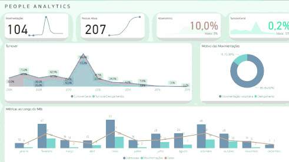

Dahboard de Vendas da empresa Olist
Dashboard desenvolvido para a empresa Buscante para análise da evolução do número de pedidos, preferência de meio de pagamento e quantidade de produto por categoria.
A empresa e os dados são fictícios.
Projeto desenvolvido durante curso da Alura.

Dashboard para análise de Turnover da empresa TechSafe.
Dashboard desenvolvido para a empresa TechSafe para análise da taxa de rotatividade de colaboradores,
A empresa e os dados são fictícios.
Projeto desenvolvido durante curso da Alura.